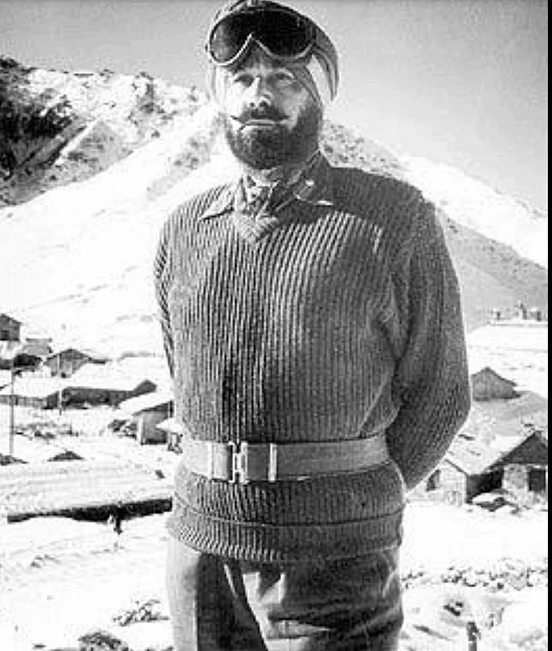
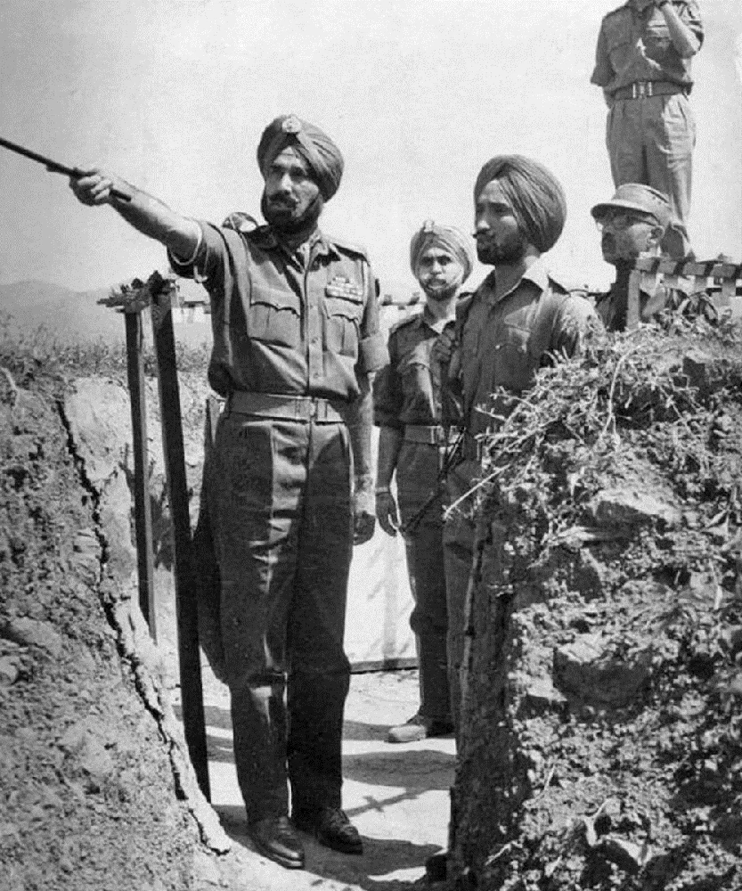
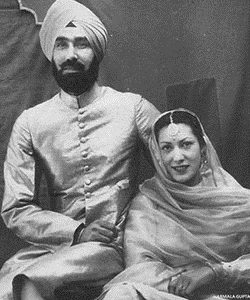
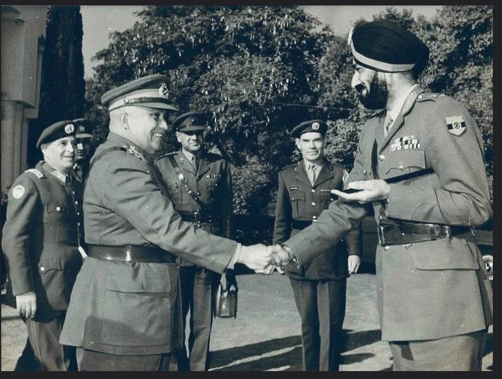
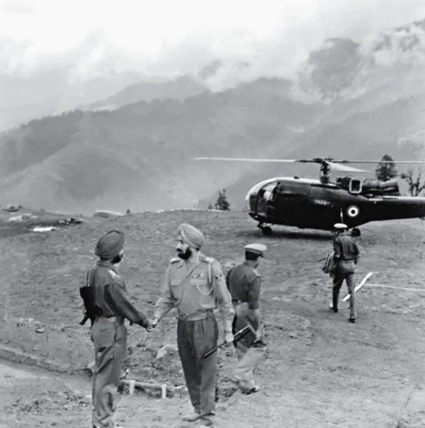
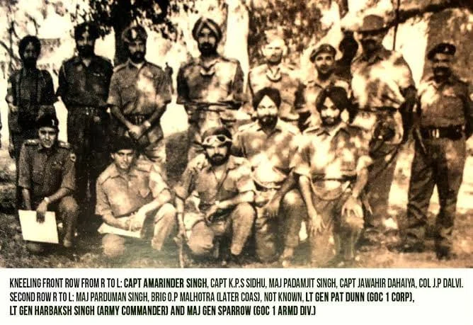
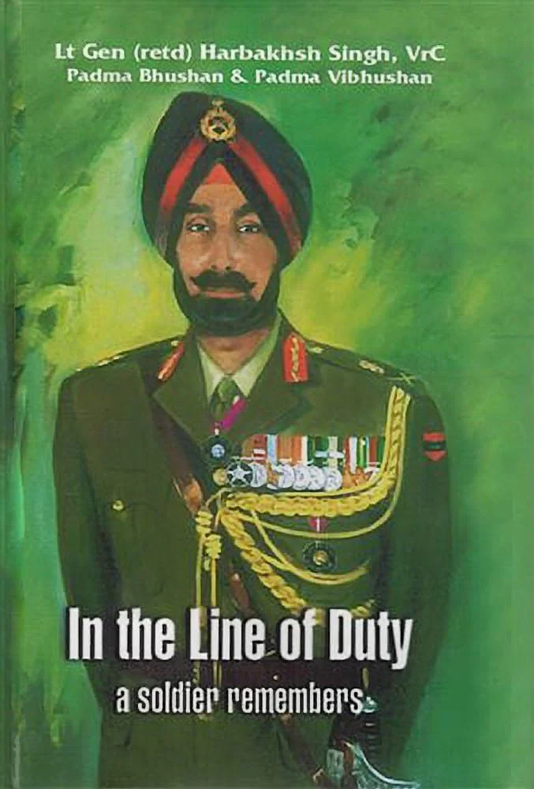

1. Lieutenant General Harbakhsh Singh is an iconic figure of the SIKH Regiment and Indian Army. He was born on 01 October 1913 at Village Badrukhan, near Sangrur, capital of the erstwhile Jind State. He attended the Ranbir High School in Sangrur before joining Government College, Lahore. A keen sportsman, he was a leading member of the College Hockey team. In 1933, he joined the second course of Indian Military Academy (IMA), Dehradun.
2. He was commissioned on 15 July 1935 and started his career with a year's post-commission attachment with the 2nd Battalion, Argyll and Sutherland Highlanders, at Rawalpindi. It was standard practice for newly commissioned Indian officers to be attached to British regiments before being posted to an Indian unit. He saw action on the North-West Frontier during the Mohmand Campaign of 1935. After a year's attachment, he joined 5/11 SIKHS at Aurangabad on 19 August 1936 and participated in operations in North-West Frontier.
3. In February 1947, he was selected to join the first long course at Staff College, Quetta after which he was posted as GSO-1 (Operations and Training), Eastern Command. In October 1947, when Lieutenant Colonel Dewan Ranjit Rai, CO 1 SIKH was killed in action during the Kashmir Operations, General Harbakhsh volunteered to command the Battalion.
4. However, he was posted as Deputy Commander of 161 Infantry Brigade, under which 1 SIKH was fighting. He conducted the main battle against the raiders at Shalateng on 07 November 1947, which was a turning point in the war. On 12 December 1947, on hearing about the heavy casualties suffered by 1 SIKH, he proceeded to Uri and voluntarily took over the command, dropping a star from his rank. He then led the Battalion in operations around Handwara.
5. In 1948, he took over command of 163 Infantry Brigade which successfully captured Tithwal on 18 May 1948 and Brigadier Harbakhsh Singh was awarded 'Vir Chakra' for his bravery. After the Kashmir operations, he was Deputy Commandant, IMA, Director of Infantry at AHQ and in 1957 attended a course at the Imperial Defence College, UK. In January 1959, he became the first foreign officer to go on attachment with German Army's first division to be raised after their disbandment at the end of Second World War. He commanded the 27 Infantry Division and later 5 Infantry Division. From July 1961 to October 1962, he was the Chief of Staff at HQ Western Command. When the Chinese invaded in 1962, he was moved from Shimla to take over the command of 4 Corps and was later on side-stepped as GOC 33 Corps.
6. In 1964, he was promoted as an Army Commander and took over Western Command (1964-69), successfully leading the Western Army during the Indo-Pakistan War, 1965. For his stellar leadership in the 1965 War, he was awarded the Padma Bhushan and later on the Padma Vibhushan. He superannuated from service in September 1969 and passed away on 14 November 1999 at New Delhi due to natural causes, at the age of 86. He was Colonel of the SIKH Regiment from April 1953 to September 1971.
Scan to view this art record in Chrome on your phone.